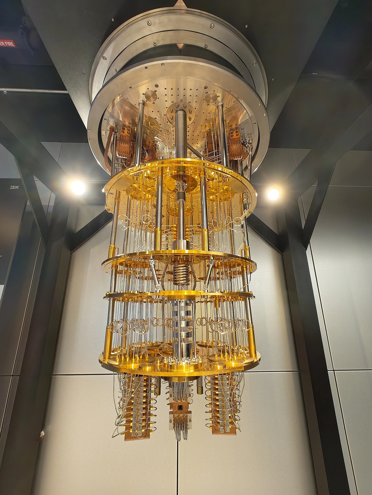

Kuantum bilgisayarlarla ilgili haberlerde “milyonlarca olasılığı aynı anda deniyor” ya da “yakında bütün şifreleri kıracak” gibi iddialara sık rastlanıyor. Gerçek tablo daha özgül: kuantum işlemciler bazı algoritmalar için klasik bilgisayarlardan farklı bir hesaplama yolu sunuyor; fakat ölçüm, gürültü ve hata düzeltme gereksinimleri bu avantajı pratik bir ürüne dönüştürmeyi zorlaştırıyor.
Kübit, süperpozisyon ve ölçüm — kısa açıklama
Klasik bilgisayar bilgiyi bitlerle, yani 0 veya 1 değerleriyle temsil eder. Kuantum bilgisayarın temel birimi olan kübit, ölçülmeden önce 0 ve 1 durumlarının kuantum birleşiminde bulunabilir. Birden çok kübit dolaşık hâle getirilebilir; kuantum algoritmaları bu durumların genliklerini girişim yoluyla düzenleyerek bazı sonuçları güçlendirip bazılarını bastırır. Ölçüm yapıldığında ise tek bir sonuç elde edilir.
Bu, bilgisayarın bütün cevapları paralel biçimde hesaplayıp kullanıcıya vermesi demek değildir. Algoritma, doğru cevabı ölçme olasılığını artıracak biçimde tasarlanmalıdır. Kuantum mekaniğinin bu özellikleri belirli hesaplamalarda avantaj sağlayabilir; sıradan e-posta, oyun, web gezintisi ya da her tür veri işlemi için otomatik bir hız artışı sağlamaz.
Nerede fark yaratma ihtimali daha yüksek?
Moleküller ve yeni malzemeler
Moleküllerin ve katı maddelerin elektron davranışları doğası gereği kuantum mekaniğine uyar. Bu sistemleri klasik bilgisayarla ayrıntılı simüle etmek, sistem büyüdükçe zorlaşabilir. Hata düzeltilmiş, yeterince büyük bir kuantum bilgisayar gelecekte moleküler enerji düzeylerini, katalizörleri, batarya malzemelerini veya başka kuantum sistemlerini modellemeye yardımcı olabilir. Bilimsel derlemeler bunu umut verici uygulama alanlarından biri olarak gösteriyor; fakat aday uygulama olması, bugün ilaç veya pil geliştirme sürecinde üstünlük sağladığı anlamına gelmiyor.
Şifreleme ve dijital güvenlik
Yeterince büyük ve hataya dayanıklı bir kuantum bilgisayar, Shor algoritmasıyla bazı yaygın açık anahtarlı şifreleme yöntemlerinin dayandığı matematik problemlerini çözebilir. Ancak bugünkü cihazlar bu ölçekte güvenilir hesaplama yapabilen makineler değil. Yine de veriler yıllarca gizli kalacaksa, gelecekteki risk şimdiden planlama gerektiriyor: NIST 2024’te kuantum saldırılarına karşı tasarlanmış ilk üç post-kuantum kriptografi standardını yayımladı. Bunlar kuantum bilgisayarda çalışan algoritmalar değil; klasik cihazlarda çalışan, kuantuma dirençli yeni şifreleme standartlarıdır.
Özel matematiksel problemler
Shor’un çarpanlara ayırma algoritması ve Grover’ın arama yaklaşımı, kuantum hesaplamanın bilinen kuramsal örnekleridir. Ancak kuramsal hızlanma tek başına yeterli değildir: gerçek donanımın hata oranı, gerekli mantıksal kübit sayısı, iletişim ve hata düzeltme maliyeti hesaba katılmalıdır. Genel amaçlı bir optimizasyon hızlandırıcısı gibi çalıştığı kanıtlanmış değildir; belirli problemlerde pratik avantaj olup olmadığı aktif bir araştırma konusudur.
İlerleme var; ama “hatasız kuantum bilgisayar” henüz yok
2024’te Nature dergisinde yayımlanan Willow çalışması, yüzey kodundaki mantıksal kübit büyüklüğü artırılırken hata düzeltmenin hata oranını azaltabildiğini gösterdi. Google’ın 105 fiziksel kübitli işlemcisiyle yapılan deney, ölçek büyüdükçe hata düzeltmenin eşiğin altında çalışabildiğine dair önemli bir adım olarak raporlandı. Bu, uzun ve güvenilir hesaplamalar yapabilecek, genel amaçlı ve hatasız bir kuantum bilgisayarın tamamlandığı anlamına gelmiyor.
Fiziksel kübitler çevresel etkilere ve kontrol hatalarına duyarlıdır. Faydalı bir mantıksal kübit oluşturmak için çok sayıda fiziksel kübit ve sürekli hata tespiti gerekebilir. Büyük bir hesaplama için hata düzeltme, donanım ve algoritmaların birlikte gelişmesi gerekir. Bu yüzden tek başına “kaç kübit var?” sayısı, bir bilgisayarın hangi işi güvenilir biçimde yapabildiğini açıklamaz.
Ne zaman günlük hayatı etkiler?
Kuantum bilgisayarlar büyük olasılıkla evde kullandığımız dizüstü bilgisayarların yerini almayacak. Eğer ölçeklenebilir, hata düzeltilmiş sistemler geliştirilirse, daha olası model uzmanların kuantum donanımını bulut üzerinden belirli bilimsel hesaplar için kullanmasıdır. Bunun günlük yaşama etkisi doğrudan cihaz satın almak değil; yeni malzemeler, kimyasal süreçler veya güvenlik altyapısındaki iyileşmeler olabilir.
Bu alanın bilimsel ilerlemesi gerçek, fakat zaman çizelgesi belirsiz. En dürüst yanıt şu: kuantum bilgisayarlar her şeyi değiştirmeyecek; bazı dar ama önemli problem sınıflarını çözme biçimimizi değiştirebilir. Bu dönüşümün ne zaman ve hangi uygulamalarda ekonomik olarak anlamlı olacağı ise henüz gösterilmiş değil.
Kaynaklar
- National Institute of Standards and Technology (NIST). What is Quantum Information Science? Kuantum bilgisayarlar, sensörler ve iletişim araştırmaları için kurumsal genel bakış. NIST.
- Au-Yeung, R. et al. (2024). “Quantum algorithms for scientific computing.” Reports on Progress in Physics, 87(11). Kuantum algoritmalarının bilimsel hesaplamadaki imkânlarını ve aşılması gereken sorunları inceleyen hakemli derleme. doi:10.1088/1361-6633/ad85f0.
- Acharya, R. et al. (2025). “Quantum error correction below the surface code threshold.” Nature, 638, 920–926. Willow işlemcisinde hata düzeltme ölçeklenmesine ilişkin hakemli çalışma. Nature makalesi.
- National Institute of Standards and Technology (NIST). Post-Quantum Cryptography Standards. 2024’te yayımlanan kuantuma dirençli kriptografi standartları ve geçiş çalışmaları. NIST PQC projesi.
- Preskill, J. (2018). “Quantum Computing in the NISQ era and beyond.” Quantum, 2, 79. Gürültülü ara dönem kuantum cihazlarının yetenek ve sınırlılıklarına dair hakemli makale. doi:10.22331/q-2018-08-06-79.
- Gidney, C. & Ekerå, M. (2021). “How to factor 2048 bit RSA integers in 8 hours using 20 million noisy qubits.” Quantum, 5, 433. Büyük ölçekli şifre çözmenin donanım gereksinimlerine dair kaynak temelli tahmin; mevcut cihazın gösterilmiş kabiliyeti değildir. doi:10.22331/q-2021-04-15-433.
Kaynaklar 8 Kasım 2026 tarihinde kontrol edildi. Uygulama örnekleri potansiyel araştırma alanlarıdır; sonuçlar, hakemli çalışmaların gösterdiği kapsamla sınırlı aktarılmıştır.